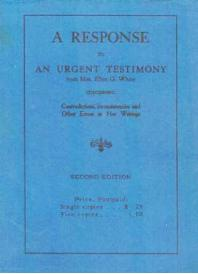

A Response to an Urgent Testimony
By Doctor Charles Stewart
Note:Doctor Charles Stewart wrote this book, first as a letter to Ellen G. White (EGW) in response to her request for a letter from him as well as others in Battle Creek because they were questioning her conflicting testimonies she was sending out.
EGW:"To Those Who Are Perplexed Regarding the Testimonies Relating to the Medical Missionary Work: "Recently in the visions of the night I stood in a large company of people. There were present Dr. Kellogg, Elders Jones, Tenny, and Taylor, Dr. Paulson, Elder Sadler, Judge Arthur, and many of their associates. I was directed by the Lord to request them and any others who have perplexities and grievous things in their minds regarding the testimonies that I have borne, to specify what their objections and criticisms are. The Lord will help me to answer these objections, and to make plain that which seems to be intricate." "Let those who are troubled now place upon paper a statement of the difficulties that perplex their minds, and let us see if we can not throw some light upon the matter that will relieve their perplexities. The time has come for the leaders to state to us the perplexities…" EGW, Quoted in Doctor Stewart's letter.
The major portion of this pamphlet was sent May 8, 1907, to W. C. White with the following request: " I am sending this to you so that you can give it personally to your mother if you think best. I do not wish to burden her with these things, but since she has said that the Lord wishes them sent and that he will help her to answer them, I shall leave the responsibility and results with her."
The author of this letter informs us that he has written three letters on this subject to W. C. White, but nearly five months have elapsed and he has not even received the courtesy of a reply. However, the registration receipt properly signed was returned.
We have no means of knowing whether or not Mrs. White received the letters, but we do know that Elder A. G. Daniells was duly informed about them and that he took occasion in a public meeting to severely criticize the author for doing exactly what Mrs. White wrote in the name of the Lord asking him to do. Notwithstanding the fact that the letter was written in response to an urgent testimony, Elder Daniells assumed the right to criticize, and we are informed by several who heard him and who later had an opportunity to read the letter, that his criticism was unjust because he did not mention the fact that the letter was written in response to a testimony.
We have numerous evidences which might be presented to show that Elder Daniells has given this matter wide-spread publicity, but space prevents us from referring to more than one other instance. We quote from a letter from a S. D. A. minister under date of Sept. 19, 1907, as follows: "Elder Daniells told us at camp-meeting that there was being a book published at Battle Creek. . . . The book was about Sister White's writings. If the book breathes the Spirit of Christ and is in harmony with the Bible, then I should like a copy of it. Sister White has made mistakes in her writings, and it is only due to the people of the S. D. A. Church that they find it out so as to avoid false doctrines."
The undue and unwise publicity given this matter has created such a demand for the letter that the author has been entreated by many to publish it, but he has steadfastly refused so to do, maintaining that he never intended that it should be made public only in so far as those who were desirous of knowing his views with reference to the matter, they would be allowed to read it. In this we have reason to believe he has kept his promise to the letter. In this connection we wish to state that neither the author nor any person or persons connected with the Battle Creek Sanitarium are responsible for the appearance of this letter in print.
It seems that the time has come when the testimonies are being made a test of fellowship and since a comparatively small number of Seventh-day Adventists have an opportunity to know why some can not accept everything that is written by Mrs. White as being inspired, we believe that a general publication of the facts herein contained will be a means of enlightening many as to the cause of what some are pleased to call the "GREAT APOSTASY." For this reason a number of the lovers of truth have had this printed and distributed in the hope that all may have an opportunity to become familiar with the facts.
Chapter 1: A Response to an Urgent Testimony from Mrs. E. G. White
Contents
- A Response to an Urgent Testimony from Mrs. E. G. White
- Mrs. White's Letter to the Sanitarium Workers
- Workers are not to Sign A Contract
- The Sanitarium is not A Denominational Institution
- Dr. Kellogg Does and Does Not Believe The Testimonies
- Testimonies For and Against Butter
- A Catholic Woman Led Mrs. White to Quit The Use of Meat
- Erection of Buildings In Chicago
- Testimonies For and Against Dr. Kellogg
- Rebuilding The Battle Creek Sanitarium
- Facts About Mrs. White's Book "Sketches From The Life of Paul" (Plagiarism)
- How Mrs. White Paid Tithes
- Comparing Dr. Cole with Mrs. E. G. White's Health Reform
- Mrs. E. G. White's Inconsistent and Contradictory Testimonies
Robert K. Sanders, Founder and Editor of Truth or Fables, 1997–2012
Life Assurance Ministries assumed ownership of Truth or Fables in 2012
© 2016 Life Assurance Ministries. All rights reserved.